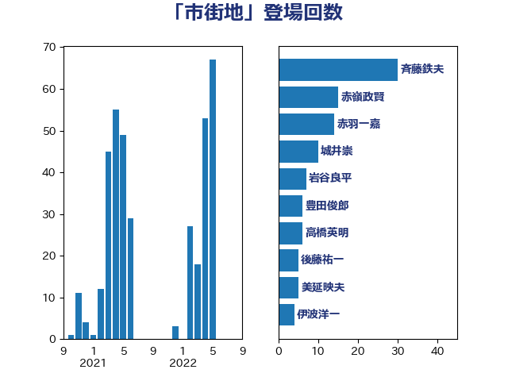

単語「市街地」

| 斉藤鉄夫 | 公明党 | 30 回 |
| 赤嶺政賢 | 日本共産党 | 15 回 |
| 赤羽一嘉 | 公明党 | 14 回 |
| 城井崇 | 立憲民主党 | 10 回 |
| 岩谷良平 | 日本維新の会 | 7 回 |
| 豊田俊郎 | 自由民主党 | 6 回 |
| 高橋英明 | 日本維新の会 | 6 回 |
| 後藤祐一 | 立憲民主党 | 5 回 |
| 美延映夫 | 日本維新の会 | 5 回 |
| 伊波洋一 | 無所属 | 4 回 |
| 岸信夫 | 自由民主党 | 4 回 |
| 河野太郎 | 自由民主党 | 4 回 |
| 西銘恒三郎 | 自由民主党 | 4 回 |
| 足立敏之 | 自由民主党 | 4 回 |
| 伊藤渉 | 公明党 | 3 回 |
| 務台俊介 | 自由民主党 | 3 回 |
| 室井邦彦 | 日本維新の会 | 3 回 |
| 浜野喜史 | 国民民主党 | 3 回 |
| 田村智子 | 日本共産党 | 3 回 |
| 篠原豪 | 立憲民主党 | 3 回 |
| 高橋千鶴子 | 日本共産党 | 3 回 |
| 吉川沙織 | 立憲民主党 | 2 回 |
| 塩崎彰久 | 自由民主党 | 2 回 |
| 小西洋之 | 立憲民主党 | 2 回 |
| 日下正喜 | 公明党 | 2 回 |
| 浜口誠 | 国民民主党 | 2 回 |
| 渡辺猛之 | 自由民主党 | 2 回 |
| 萩生田光一 | 自由民主党 | 2 回 |
| 野田国義 | 立憲民主党 | 2 回 |
| 青木愛 | 立憲民主党 | 2 回 |
| おおつき紅葉 | 立憲民主党 | 1 回 |
| 三ッ林裕巳 | 自由民主党 | 1 回 |
| 中野英幸 | 自由民主党 | 1 回 |
| 串田誠一 | 日本維新の会 | 1 回 |
| 伊藤孝江 | 公明党 | 1 回 |
| 吉田宣弘 | 公明党 | 1 回 |
| 吉良州司 | 無所属 | 1 回 |
| 大島敦 | 立憲民主党 | 1 回 |
| 大西健介 | 立憲民主党 | 1 回 |
| 大西英男 | 自由民主党 | 1 回 |
| 宮崎政久 | 自由民主党 | 1 回 |
| 小宮山泰子 | 立憲民主党 | 1 回 |
| 小林茂樹 | 自由民主党 | 1 回 |
| 尾崎正直 | 自由民主党 | 1 回 |
| 岸真紀子 | 立憲民主党 | 1 回 |
| 川合孝典 | 国民民主党 | 1 回 |
| 徳永エリ | 立憲民主党 | 1 回 |
| 木村次郎 | 自由民主党 | 1 回 |
| 杉久武 | 公明党 | 1 回 |
| 杉尾秀哉 | 立憲民主党 | 1 回 |
| 松木けんこう | 立憲民主党 | 1 回 |
| 松野博一 | 自由民主党 | 1 回 |
| 森山浩行 | 立憲民主党 | 1 回 |
| 津島淳 | 自由民主党 | 1 回 |
| 浦野靖人 | 日本維新の会 | 1 回 |
| 深澤陽一 | 自由民主党 | 1 回 |
| 清水真人 | 自由民主党 | 1 回 |
| 田村貴昭 | 日本共産党 | 1 回 |
| 石井章 | 日本維新の会 | 1 回 |
| 石川博崇 | 公明党 | 1 回 |
| 石川香織 | 立憲民主党 | 1 回 |
| 空本誠喜 | 日本維新の会 | 1 回 |
| 竹内真二 | 公明党 | 1 回 |
| 紙智子 | 日本共産党 | 1 回 |
| 緒方林太郎 | 無所属 | 1 回 |
| 芳賀道也 | 国民民主党 | 1 回 |
| 茂木敏充 | 自由民主党 | 1 回 |
| 赤澤亮正 | 自由民主党 | 1 回 |
| 野上浩太郎 | 自由民主党 | 1 回 |
| 階猛 | 立憲民主党 | 1 回 |
| 高木かおり | 日本維新の会 | 1 回 |